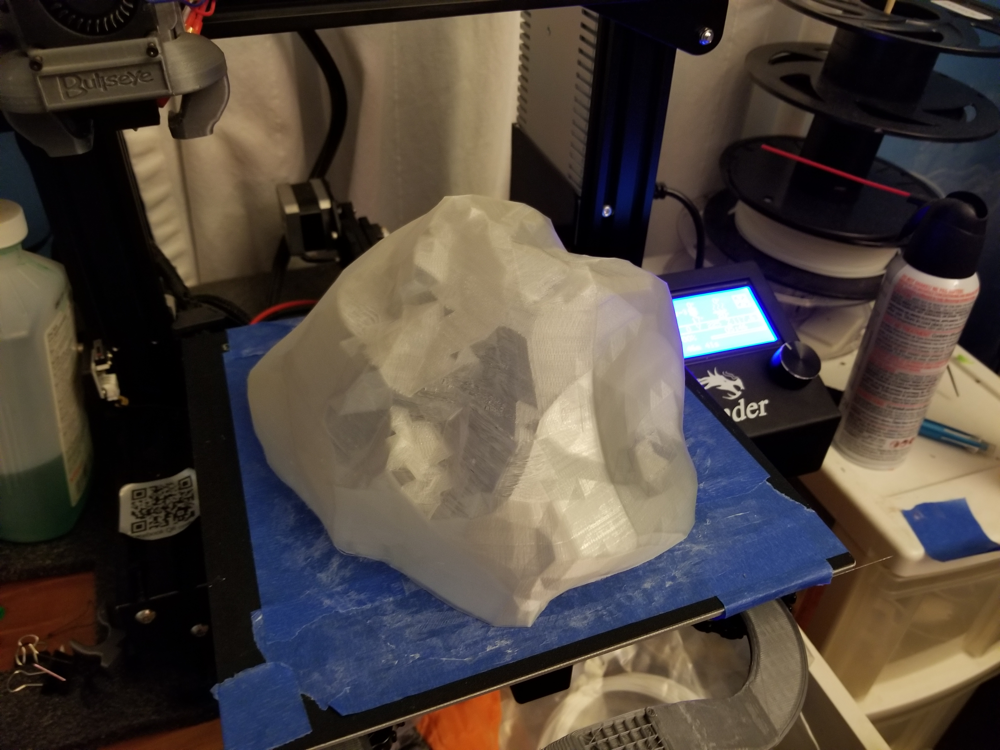

BFA Exhibition
Proposal
This is essentially a continuation of my sculpture work Protection (on right image). Just like the previous work, there will be objects that acts like a shell surrounding a bright and “pure” core that will represent the core of a being or thing. The core itself (preferably the size will be 5 or more inches) will be 3D printed in mind to be transparent and hallow internally to allow the installation of LEDs and sounds. The objects surrounding the core will be sharp and angular. They will also be fashioned in a way that their suggested line follows towards or away from the core, depending on the audience’s perspective. Both the layers and core will be hanged individually from the ceiling to give the impression that everything is suspended in mid-air and that the objects are surrounding the core in all directions.
This setup is to play with the idea/perspective/mood between outburst and oppression (or explosion or implosion). How external forces or internal struggles suppress down on you and you need to break out of a mold explosively. The LEDs in the core, combined with the suggested lines of the objects surrounding it, will assist in setting the mood of the piece between a positive or negative mood (being attacked/oppressed and breaking out).
 The initial concept sketch
The initial concept sketch
 The previous project this show is based on
The previous project this show is based on
Initial Sketch
WIP
Explaining overall structure of show in gallery.
Inspiring Artists
Cornelia Parker
 The Story of Cold Dark Matter
The Story of Cold Dark Matter
“As the objects were suspended one by one, they began to lose their aura of death and appeared reanimated, in limbo. I operate very often in these ‘frozen moments’ where there’s been lots of action but this a sort of quiet corner of that…So it’s not the explosion, it’s more the contemplation, you know, the quiet contemplation of these things in the air and because the things are in the air, they haven’t got the pathos they would have had if they were on the ground. It takes away that kind of pathos, which is there when you see a lot of the debris on the ground after an explosion, well put it back in the air and it’s still got some life.”
As such I believe her method of contruction will beneifit myself in constructing my Persistence.
Do-Ho Suh
FloorSandy Skoglund
Cold war (top right), Radioactive Cats (bottom right)Damian Ortega
Controller of the UniverseProgress
Small Scale /// PrototypesSmall Scale
Since this was going to be a large scale installation in the Black Gallery, creating a small scale version was probably best. While the small scale constructed here doesn't exactly protray the exact presentation of the final work, This was enough to understand the interactions between each piece in their relative placement as well as getting an idea of other elements including lighting (video test below).
Prototypes
Debris Cutouts

Core+Electronics
The electronics themselves is simply using a neopixel strip connect to an Ardunio Uno. The videos below show the elecronics using modifiled example sketches and a modiflied sketch generator provided online. They will then be balled up inside the core. For the lighting, I wanted it to presented bright and dark colors to represent a external force or internal force (social mentalilty vs self-realization) but since I wanted to include the shadows I went for the bright classic "good" green and "evil" purple.
